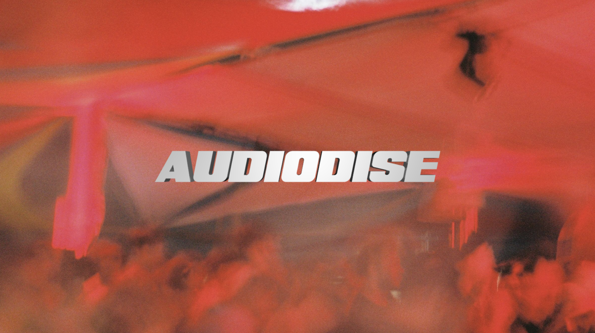

La fiestaThe party
Audiodise vuelve a la orilla: otra tarde-noche de domingo en la playa, del atardecer a la madrugada. La playa se convierte en punto de encuentro, un lugar para dejarse llevar del sol al anochecer, bailando junto al mar con sonido de alta calidad.Audiodise returns to the shoreline — another Sunday drifting from afternoon into sunset, dancing by the sea. The beach becomes the meeting point, a place to drift from afternoon into dusk with audiophile sound.

